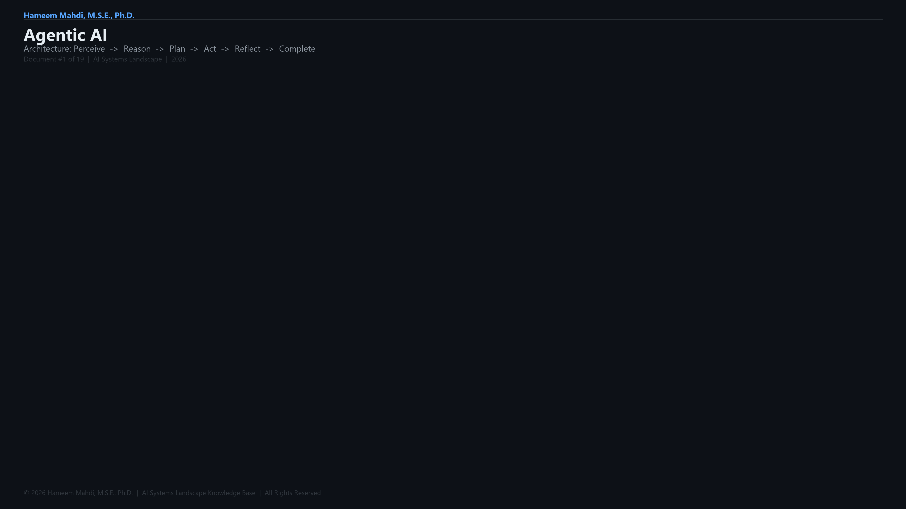
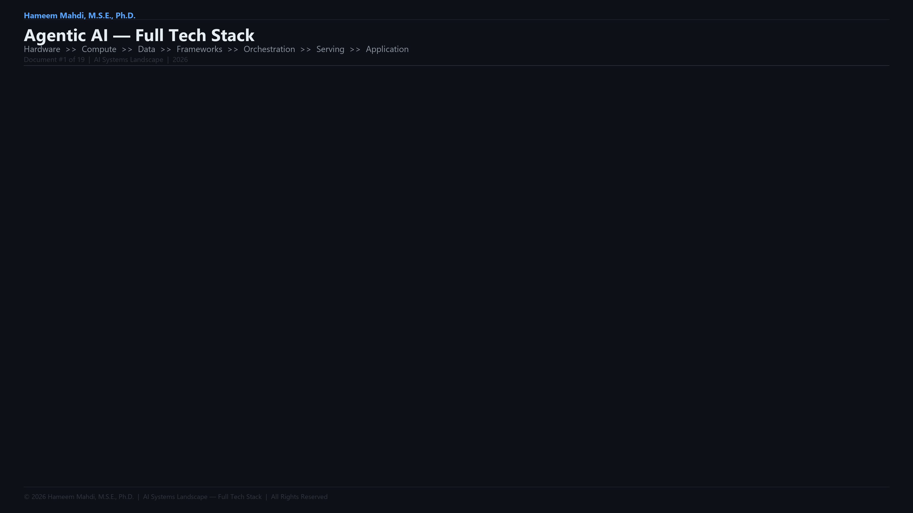

A comprehensive interactive exploration of Agentic AI systems — the agent loop, 8-layer stack, design patterns, multi-agent topologies, protocols, benchmarks, market data, and more.
~68 min read · Interactive Reference📄 Perceive, Plan, Act, Self-Correct: An Architectural Framework for Goal-Directed Agentic AI Systems 💻 Reference Implementation (PPAS · 5-Phase Dev)
Agentic systems follow a continuous perception-reasoning-action cycle. Hover over each step to learn more.
Move your cursor over any step in the agent loop to see what happens at that stage.
Agentic systems follow a continuous perception-reasoning-action cycle:
┌───────────────────────────────────────────────────────────────────┐
│ THE AGENT LOOP │
│ │
│ 1. GOAL 2. PLANNING 3. ACTION │
│ ───────────── ────────────────── ────────────── │
│ User defines Agent decomposes Agent selects & │
│ objective or goal into sub-tasks calls tools / │
│ task & reasoning chain executes steps │
│ │
│ 4. OBSERVATION 5. REFLECTION 6. MEMORY │
│ ────────────── ───────────────── ────────────── │
│ Agent receives Agent evaluates Results stored │
│ tool outputs & result; updates in short or │
│ environmental plan if needed long-term memory │
│ feedback │
│ │
│ ──────────── LOOP CONTINUES UNTIL GOAL IS ACHIEVED ─────────── │
└───────────────────────────────────────────────────────────────────┘
| Step | What Happens |
|---|---|
| Perceive | Agent receives the goal, available context, and prior memory |
| Reason | Agent generates an internal reasoning trace — what to do and why |
| Plan | Agent decomposes the goal into an ordered sequence of sub-tasks |
| Act | Agent selects and calls a tool, API, browser, or executes code |
| Observe | Agent receives the result of the action from the environment |
| Reflect | Agent critiques the result; decides to continue, retry, or revise |
| Update | Agent stores relevant results in memory; updates its working plan |
| Complete | Agent determines the goal is met and returns a final output |
| Parameter | What It Controls |
|---|---|
| Max Iterations | Maximum number of agent loop cycles before forced termination |
| Tool List | Set of external tools and APIs the agent is permitted to call |
| Memory Scope | What the agent remembers: in-context only, session-level, or persistent |
| Human-in-the-Loop Gates | Points at which the agent must pause and await human approval |
| Planner Model | The underlying LLM powering reasoning (e.g., GPT-5, Claude 4 Opus) |
| Worker Models | Specialised sub-models or agents delegated specific sub-tasks |
| Timeout / Budget | Time and token budget constraints on agent execution |
Auto-GPT became the fastest-growing GitHub repo in history within weeks of its 2023 release.
Modern AI agents can chain 50+ tool calls in a single task execution without human intervention.
The ReAct (Reasoning + Acting) framework showed that interleaving thought and action improves agent accuracy by 30%+.
Test your understanding — select the best answer for each question.
Q1. What does the ReAct framework combine?
Q2. Which component stores an AI agent's past interactions?
Q3. What is "tool use" in the context of AI agents?
Click any layer to expand its details. The stack is ordered from infrastructure (bottom) to application (top).
| Layer | What It Covers |
|---|---|
| 1. Foundation Models | The LLMs powering reasoning and generation at the core |
| 2. Agent Runtime & Orchestration | Frameworks managing the agent loop, state, and execution |
| 3. Memory Systems | Short-term context, long-term storage, and retrieval infrastructure |
| 4. Tool & Integration Layer | APIs, code executors, browsers, databases, and external services |
| 5. Inter-Agent Protocols | Standards enabling agent-to-agent and agent-to-tool communication |
| 6. Planning & Reflection Layer | CoT, ToT, self-critique, and task decomposition strategies |
| 7. Applications & Products | Consumer agents, enterprise platforms, and vertical AI solutions |
| 8. Observability, Safety & Control | Monitoring, guardrails, evaluation, audit logs, and HITL gates |
The foundational architectural patterns that power modern agentic AI systems.
The foundational pattern underlying most production agents.
| Aspect | Detail |
|---|---|
| Introduced | "ReAct: Synergizing Reasoning and Acting in Language Models" — Yao et al., 2022 |
| Core Mechanism | Interleaves chain-of-thought reasoning traces with tool-use actions in a loop |
| Why It Works | Reasoning grounds actions; observations from actions inform further reasoning |
| Used In | LangChain agents, LangGraph, OpenAI Agents SDK, most general-purpose agents |
| Limitation | Can get stuck in repetitive loops; requires iteration limits and error handling |
| Aspect | Detail |
|---|---|
| Core Mechanism | Agent generates an output, then critiques it against the original goal |
| Variants | Self-Refine, Reflexion (with persistent memory of past failures) |
| Best For | Writing, code review, quality improvement, factual accuracy checks |
| Key Benefit | Substantially improves output quality without additional human review |
| Pattern | How It Works | Best For |
|---|---|---|
| Chain of Thought (CoT) | Linear step-by-step reasoning before acting | Simple sequential tasks |
| Tree of Thought (ToT) | Explores multiple reasoning branches in parallel; selects best path | Complex decision trees, strategic reasoning |
| Plan-and-Execute | Agent creates a full upfront plan, then dispatches sub-tasks | Structured, predictable multi-step workflows |
| Dynamic Re-planning | Agent updates its plan at each step based on new observations | Open-ended research and exploration tasks |
| MCTS (Monte Carlo Tree Search) | Probabilistic exploration of decision branches with backpropagation | Game-like or optimization problems |
Key Planning Innovations:
| Innovation | What It Enables |
|---|---|
| Scratchpad / Working Memory | Temporary reasoning space for intermediate thoughts |
| Step-Back Prompting | Agent zooms out to consider higher-level principles before acting |
| Chain-of-Draft | Generate concise reasoning steps to reduce token consumption |
| Skeleton-of-Thought | Plan structure first, then fill in details in parallel |
| LLM-as-Judge | A second model evaluates plan quality before execution begins |
| Aspect | Detail |
|---|---|
| Core Mechanism | Agent pauses at pre-defined checkpoints and requests human approval |
| Approval Types | Binary approve/reject; annotated feedback; redirect with new instructions |
| When Required | Irreversible actions, financial transactions, external communications, deployments |
| Frameworks | LangGraph interrupt nodes, OpenAI Agents SDK handoffs, CrewAI human tasks |
| Aspect | Detail |
|---|---|
| Core Mechanism | Agent calls external functions, APIs, or services to retrieve or act on real-world data |
| Tool Types | Web search, code execution, database queries, file I/O, browser control, API calls |
| Tool Selection | Agent reasons about which tool to use based on task context and tool descriptions |
| Error Handling | Self-healing agents detect tool failures and retry with modified inputs |
| Aspect | Detail |
|---|---|
| Core Mechanism | Agent fetches relevant documents from a vector store before generating a response |
| Why It Matters | Grounds agent outputs in authoritative, up-to-date knowledge |
| Advanced Patterns | Agentic RAG (multi-hop), Self-RAG (decides when to retrieve), Corrective RAG |
| Infrastructure | Vector databases (Pinecone, Weaviate, Qdrant), embedding models, chunking strategies |
| Aspect | Detail |
|---|---|
| Core Mechanism | Agent detects errors in tool call results or reasoning; automatically retries or reroutes |
| Failure Types | Tool timeout, malformed output, API rate limit, logic inconsistency |
| Strategies | Exponential backoff, alternative tool selection, sub-task reassignment to another agent |
| Best For | Production reliability, long-running autonomous workflows |
Memory is the defining capability that separates agents from one-shot generative systems.
Memory is the defining capability that separates agents from one-shot generative systems. Agents can maintain state across steps, sessions, and time.
| Memory Type | Scope | What It Stores | Implementation |
|---|---|---|---|
| In-Context (Working) | Current session | Active reasoning trace, task state, recent tool results | LLM context window |
| Short-Term (Session) | Single session | Conversation history, intermediate outputs, user preferences | In-memory store, Redis |
| Long-Term (Persistent) | Across sessions | User facts, preferences, domain knowledge, prior decisions | Vector DB, SQL, graph DB |
| Episodic | Across sessions | Specific past events and interactions | Vector DB (semantic search) |
| Semantic | Persistent | General facts and domain knowledge | Knowledge graph, RAG store |
| Procedural | Persistent | How-to knowledge; agent workflow instructions | Prompt store, fine-tuning |
| Sensory | Immediate | Raw inputs before processing (screenshots, audio) | Transient buffer |
| Operation | Description |
|---|---|
| Write | Store new information after an action or observation |
| Read / Retrieve | Fetch relevant memory via semantic search or exact lookup |
| Update | Modify an existing memory record with newer information |
| Forget / Expire | Remove outdated or low-relevance memories to prevent noise |
| Summarise | Compress long memory histories into concise representations |
| Tool | Type | Highlights |
|---|---|---|
| Mem0 | Open-source / SaaS | Personalised persistent memory layer for AI agents; cross-session |
| Zep | Open-source / SaaS | Long-term memory for conversational agents; temporal awareness |
| Letta (MemGPT) | Open-source | Self-editing memory; agents manage their own memory paging |
| LangMem | Open-source | LangChain-native long-term memory layer |
| Pinecone | Managed SaaS | Vector DB for semantic long-term memory retrieval |
| Redis | Open-source / SaaS | Low-latency short-term session memory store |
Multi-agent systems distribute intelligence across specialised agents working in concert.
Multi-agent systems distribute intelligence across specialised agents working in concert — enabling parallelism, specialisation, and horizontal scaling of intelligence.
| Topology | How It Works | Best For |
|---|---|---|
| Orchestrator-Worker | A central orchestrator delegates sub-tasks to specialised worker agents | Structured pipelines with clear task decomposition |
| Hierarchical | Nested layers of orchestrators and sub-agents; recursive task delegation | Complex enterprise workflows with deep specialisation |
| Peer-to-Peer (Flat) | Agents communicate directly without a central coordinator | Collaborative reasoning and debate tasks |
| Sequential Pipeline | Output of one agent becomes the input of the next | Document processing, content refinement chains |
| Parallel Fan-Out | Multiple agents execute different sub-tasks simultaneously; results are merged | Research aggregation, parallel analysis |
| Competitive / Debate | Multiple agents propose competing solutions; a judge selects the best | Decision quality improvement, adversarial validation |
| Role | Responsibility |
|---|---|
| Orchestrator / Planner | Decomposes the goal; assigns tasks to worker agents; monitors progress |
| Worker / Executor | Carries out a specific assigned sub-task using its specialised tools |
| Critic / Reviewer | Evaluates outputs from workers; provides feedback for improvement |
| Researcher | Gathers information from the web, documents, or databases |
| Synthesiser | Combines and reconciles outputs from multiple worker agents |
| Tool Specialist | Agent with exclusive or primary access to a specific toolset (e.g., code, search) |
| Human Proxy | Represents a human decision-maker in the agent network; holds approval authority |
| Mechanism | Description |
|---|---|
| Shared Message Queue | Agents post and consume messages from a central queue |
| Direct Handoff | Orchestrator transfers control and context directly to a sub-agent |
| Shared State Store | Agents read and write to a common key-value or graph-based state object |
| A2A Protocol | Standardised agent discovery, task delegation, and result streaming (Google/Linux Foundation) |
| Event-Driven | Agents subscribe to events; react when triggered by upstream agent actions |
The defining infrastructure shift of 2025–2026 — enabling agents to discover and collaborate across frameworks. Click each layer to expand.
The emergence of agent interoperability protocols is the defining infrastructure shift of 2025–2026 — enabling agents built by different teams, in different frameworks, to discover and collaborate with each other.
| Protocol | Full Name | Created By | Donated To | Layer |
|---|---|---|---|---|
| MCP | Model Context Protocol | Anthropic | Linux Foundation | Agent ↔ Tool / Data Source |
| A2A | Agent-to-Agent Protocol | Linux Foundation | Agent ↔ Agent | |
| AG-UI | Agent-User Interaction Protocol | CopilotKit | Open-source community | Agent ↔ Frontend / Human |
| Dimension | Detail |
|---|---|
| Purpose | Standardise how AI agents connect to tools, APIs, files, and data sources |
| Architecture | Client-server: MCP client (agent) connects to MCP server (tool/data host) |
| Core Primitives | Tools (callable functions), Resources (data), Prompts (templates) |
| Transport | stdio (local) or SSE/HTTP (remote) |
| Adoption | 5,000+ MCP servers published as of early 2026; supported by all major model providers |
| Key Integrations | GitHub, Slack, Google Drive, Postgres, Brave Search, Filesystem, and hundreds more |
Why MCP Matters:
Before MCP, every tool required a custom integration with every framework. MCP creates a universal plug — any agent can use any MCP-compatible tool without bespoke code.
| Dimension | Detail |
|---|---|
| Purpose | Enable agents to discover, communicate with, and delegate tasks to other agents |
| Architecture | Each agent hosts an "Agent Card" (JSON manifest) describing its capabilities and endpoints |
| Core Operations | Task creation, streaming progress updates, result delivery, multi-turn collaboration |
| Agent Card | JSON document published at /.well-known/agent.json; declares skills, auth, and schema |
| Relationship to MCP | Complementary — MCP connects agents to tools; A2A connects agents to agents |
| Key Use Case | Enterprise multi-agent orchestration; marketplace of specialised agents |
| Dimension | Detail |
|---|---|
| Purpose | Standardise real-time communication between agent backends and frontend user interfaces |
| Core Mechanism | Event-streaming protocol; agent emits typed events (text chunks, tool calls, state updates) |
| Key Events | TEXT_MESSAGE_CHUNK, TOOL_CALL_START, TOOL_CALL_END,
STATE_SNAPSHOT, CUSTOM
|
| Frontend Compatibility | React, Vue, Angular, any EventSource-compatible frontend |
| Key Benefit | Enables agents to stream live progress, show intermediate steps, and push UI updates in real time |
┌────────────────────────────────────────────────────────────────┐
│ AGENTIC PROTOCOL STACK │
│ │
│ HUMAN / USER INTERFACE │
│ │ AG-UI (Agent ↔ Frontend) │
│ ▼ │
│ ORCHESTRATOR AGENT │
│ │ A2A (Agent ↔ Agent) │
│ ▼ │
│ WORKER AGENT 1 ── WORKER AGENT 2 ── WORKER AGENT N │
│ │ │ │ │
│ MCP (Agent ↔ Tool) MCP (Agent ↔ Tool) MCP │
│ ▼ ▼ ▼ │
│ [Web Search] [Code Executor] [Database] │
└────────────────────────────────────────────────────────────────┘
Production-ready frameworks for building agentic AI systems.
| Framework | Language | Architecture Style | Deployment | Highlights | GitHub Stars |
|---|---|---|---|---|---|
| LangGraph | Python | Graph-based, stateful | Open-Source (any cloud / on-prem; Python 3.9+) | Nodes and edges define agent state machines; first-class HITL; cycles and branching | 18k+ |
| OpenAI Agents SDK | Python | Lightweight, handoff-based | Open-Source (any cloud / on-prem; Python 3.9+) | Minimalist production framework; Swarm-inspired; native OpenAI tooling | 11k+ |
| Google ADK | Python | Modular, hierarchical | Open-Source (any cloud / on-prem; optimised for GCP Vertex AI) | Optimised for Gemini; works with any model; A2A compatible; multi-agent native | 7k+ |
| CrewAI | Python | Role-based teams | Open-Source (any cloud / on-prem; Python 3.10+) | Define agents as crew members with roles, backstories, and task assignments | 31k+ |
| AutoGen (Microsoft) | Python | Conversation-driven | Open-Source (any cloud / on-prem; optimised for Azure) | Multi-agent conversations; GroupChat; teachable agents; enterprise-grade | 43k+ |
| Semantic Kernel | Python / C# / Java | Plugin-based, enterprise | Open-Source (any cloud / on-prem; optimised for Azure) | Microsoft's enterprise agent SDK; deep Azure and M365 integration | 27k+ |
| LangChain | Python | Chain + Agent primitives | Open-Source (any cloud / on-prem; Python 3.9+) | Foundational library; extensive integrations; AgentExecutor and LCEL | 126k+ |
| Smolagents | Python | Code-first | Open-Source (any cloud / on-prem; Python 3.9+) | HuggingFace framework; agents write and execute Python, not JSON | 18k+ |
| Pydantic AI | Python | Type-safe, validation-first | Open-Source (any cloud / on-prem; Python 3.10+) | Strongly typed agent framework; production-grade validation; built on Pydantic | 11k+ |
| Platform | Deployment | Highlights |
|---|---|---|
| n8n AI | Open-Source / Cloud (self-host Docker/K8s; n8n Cloud on AWS) | Visual workflow builder with native AI agent nodes; self-hostable |
| Zapier Agents | Cloud (Zapier SaaS on AWS) | Connect 6,000+ apps; natural language workflow creation; no code |
| Lindy AI | Cloud (Lindy SaaS) | Personal and team agent builder; email, calendar, CRM integrations |
| Relevance AI | Cloud (Relevance SaaS on AWS) | No-code tool and agent builder; enterprise workflow automation |
| Dify | Open-Source / Cloud (self-host Docker/K8s; Dify Cloud on AWS) | Visual LLM app builder with agent capabilities; widely adopted |
| FlowiseAI | Open-Source (self-host any infra; Node.js 18+) | Drag-and-drop LangChain-compatible agent builder |
| Voiceflow | Cloud (Voiceflow SaaS on AWS) | Conversational and agentic AI builder for customer-facing deployments |
| Dimension | LangGraph | OpenAI Agents SDK | CrewAI | AutoGen | Google ADK |
|---|---|---|---|---|---|
| Architecture | Graph / State Machine | Lightweight Handoffs | Role-based Teams | Conversation Groups | Hierarchical Modular |
| State Management | First-class, persistent | Basic, context-passing | Task-based | Message thread | Session-based |
| HITL Support | Excellent (interrupt nodes) | Good (handoff to human) | Moderate | Good | Good |
| Multi-Agent | Excellent | Good | Excellent | Excellent | Excellent |
| Learning Curve | Moderate-High | Low | Low-Moderate | Moderate | Moderate |
| Best For | Complex, production workflows | Rapid prototyping | Team-based task delegation | Research and debate agents | Gemini-centric deployments |
Click any domain category to explore agent types and real-world examples.
| Agent | What It Does | Key Examples |
|---|---|---|
| Deep Research Agents | Multi-step web search, synthesis, and long-form report generation | OpenAI Deep Research, Gemini Deep Research, Perplexity |
| Literature Review Agents | Search and synthesise academic papers | Elicit, Consensus AI, Semantic Scholar AI |
| Competitive Intelligence | Monitor and summarise competitor activity from web sources | Crayon AI, Klue, Perplexity Pro |
| News & Monitoring | Track and summarise topics across news sources | Perplexity, Feedly AI, Briefing AI |
| Agent | What It Does | Key Examples |
|---|---|---|
| Autonomous Coding Agents | Write, debug, test, and deploy code end-to-end | Devin (Cognition), SWE-Agent, OpenAI Codex CLI |
| CLI Coding Agents | Code generation and debugging via command-line interface | Claude Code, Gemini CLI, Codex CLI |
| IDE-Integrated Agents | Multi-file editing, refactoring, and agentic code completion inside the IDE | Cursor Agent Mode, Windsurf Cascade, GitHub Copilot Agent |
| Pull Request Agents | Autonomous PR creation, review, and merge | GitHub Copilot for PRs, Coderabbit, Graphite AI |
| DevOps Agents | Monitor infrastructure, auto-remediate incidents, manage CI/CD | PagerDuty AI, ServiceNow AI, GitHub Actions AI |
| Agent | What It Does | Key Examples |
|---|---|---|
| General Web Agents | Navigate the web, fill forms, extract data, take actions | OpenAI Operator, Browser Use, Skyvern |
| RPA-Replacement Agents | Automate repetitive web-based business tasks | Skyvern, HARPA AI, Robocorp AI |
| E-Commerce Agents | Search, compare, and purchase products online | OpenAI Operator, Perplexity Buy Mode |
| Data Extraction Agents | Scrape, parse, and structure web content at scale | Firecrawl, Apify AI, Browse AI |
| Agent | What It Does | Key Examples |
|---|---|---|
| Data Analysis Agents | Query databases, run code, and generate insights from data | ChatGPT Code Interpreter, Julius AI, Noteable |
| SQL Agents | Translate natural language to SQL; query databases | Text2SQL agents, Databricks Genie, Defog |
| BI Agents | Generate dashboard insights and commentary autonomously | Tableau AI, Power BI Copilot, ThoughtSpot Sage |
| Financial Data Agents | Analyse financial filings, markets, and performance data | Bloomberg AI, Kensho, AlphaSense |
| Agent | What It Does | Key Examples |
|---|---|---|
| Support Ticket Agents | Triage, classify, route, and resolve customer tickets | Salesforce Agentforce, Intercom Fin, Zendesk AI |
| Voice Support Agents | Handle inbound customer calls autonomously | Twilio AI, Retell AI, Bland AI |
| Escalation Agents | Detect when to escalate to a human and hand off seamlessly | Freshdesk AI, Kore.ai |
| Outbound Sales Agents | Prospect, qualify, and personalise outreach at scale | 11x.ai, Artisan AI, Relevance AI |
| Agent | What It Does | Key Examples |
|---|---|---|
| No-Code Workflow Agents | Connect apps and automate multi-step business processes | Zapier Agents, n8n AI, Make (Integromat) |
| Personal Productivity Agents | Manage calendar, email, tasks, and scheduling | Lindy AI, Dot (Personal AI), Notion AI |
| Document Processing Agents | Extract, transform, and route document data | Reducto AI, Unstructured.io, LlamaParse |
| Meeting Agents | Transcribe, summarise, and extract action items from meetings | Otter.ai AI Agents, Fireflies AI, Granola |
| Agent | What It Does | Key Examples |
|---|---|---|
| Invoice Processing Agents | Extract data from invoices; route for approval; update ERP | SAP Joule, Workday Agents, Palette AI |
| HR & People Ops Agents | Answer HR queries, manage onboarding workflows, process requests | Workday AI, Leena AI, ServiceNow HR |
| Procurement Agents | Source vendors, request quotes, manage POs | Zip AI, Coupa AI, GEP SMART AI |
| Legal Ops Agents | Draft contracts, review clauses, manage compliance workflows | Harvey, Ironclad AI, Spellbook |
| Agent | What It Does | Key Examples |
|---|---|---|
| Threat Detection Agents | Monitor networks and logs for anomalies and attack patterns | CrowdStrike Charlotte AI, Exabeam Nova |
| Incident Response Agents | Triage alerts, investigate incidents, and recommend remediation | Palo Alto Cortex XSOAR AI, Splunk AI |
| Penetration Testing Agents | Autonomously probe systems for vulnerabilities | Horizon3 AI, Pentera, Radiant Security |
| SOC Automation Agents | Automate Security Operations Centre workflows | Darktrace AI, Vectra AI, Microsoft Sentinel AI |
| Agent | What It Does | Key Examples |
|---|---|---|
| Drug Discovery Agents | Design, screen, and optimise drug candidates | Insilico Medicine, Recursion, Schrödinger |
| Protein Design Agents | Generate novel protein sequences with target properties | AlphaFold 3, RFdiffusion, ESMFold |
| Hypothesis Generation Agents | Surface novel scientific hypotheses from literature | Exa AI, FutureHouse agents |
| Lab Automation Agents | Design and interpret wet lab experiments autonomously | Emerald Cloud Lab, TetraScience |
| Agent | What It Does | Key Examples |
|---|---|---|
| Computer Use Agents | Perceive a computer screen and interact with any desktop/web app | Claude Computer Use, OpenAI Operator |
| Vision-Language Agents | See, reason about, and act on visual information | GPT-4o, Gemini 2.0 Flash, Claude 3.7 Sonnet |
| Audio-Active Agents | Engage in real-time spoken dialogue while using tools | OpenAI Realtime API agents, Hume AI |
How agentic AI systems are measured and ranked.
| Benchmark | What It Tests | Notes |
|---|---|---|
| SWE-Bench Verified | Real GitHub issue resolution (500 verified tasks) | Gold standard for software engineering agents; Claude 4 Opus leads |
| SWE-Bench Lite | Subset of 300 SWE-Bench tasks | Faster, cheaper evaluation of coding agents |
| WebArena | Navigate and complete tasks on realistic web environments | Tests browser agents; booking, shopping, CMS tasks |
| WorkArena | ServiceNow-based enterprise task completion | Enterprise workflow agent benchmark |
| GAIA | Real-world question answering requiring multi-step tool use | "General AI Assistants" benchmark; measures end-to-end agent capability |
| BrowseComp | Complex research questions requiring multi-hop web browsing | OpenAI benchmark; tests deep web research agents |
| Humanity's Last Exam | Extremely hard expert-level questions across all domains | Frontier capability ceiling test; OpenAI Deep Research leads |
| AssistGUI | GUI task completion on desktop applications | Tests computer use agents |
| OSWorld | Open-ended computer tasks across OS environments | Measures autonomous computer-use performance |
| τ-bench (Tau-bench) | Tool-use agent evaluation under realistic dialogue conditions | Multi-turn tool use realism benchmark |
| Model / Agent | SWE-Bench Verified | Notes |
|---|---|---|
| Claude 4 Opus (Claude Code) | ~72.5% | Top overall; best on complex, multi-file tasks |
| OpenAI Codex CLI (GPT-5.3) | ~69.1% | SWE-Bench Pro SOTA; OpenAI's dedicated coding agent |
| Gemini 3 Pro | ~65.0% | Strong; integrates with Google's dev ecosystem |
| Devin 2.0 | ~53.6% | First general SWE agent; now enhanced with new models |
| SWE-Agent (Claude) | ~48.9% | Open-source research agent; academic baseline |
| Benchmark | Top Performer (2026) | Score |
|---|---|---|
| GAIA (Test set) | Manus | 86.5% |
| BrowseComp | OpenAI Deep Research | 68.9% |
| Humanity's Last Exam | OpenAI Deep Research | 26.6% |
| WebArena | OpenAI Operator | 38.1% |
| OSWorld | Claude Computer Use | ~39% |
| Tool | Purpose |
|---|---|
| AgentBench | Comprehensive agent evaluation across 8 environments |
| LangSmith | Agent tracing, evaluation datasets, and run monitoring |
| Braintrust | AI evaluation and prompt testing for agent pipelines |
| Langfuse | Open-source LLM observability; traces multi-step agent runs |
| Ragas | Evaluate RAG components within agent pipelines |
| PromptFoo | CLI-based LLM and agent testing framework |
| Arize Phoenix | LLM observability and agent tracing platform |
The agentic AI market is projected to grow from ~$7.5B (2025) to ~$160B+ by 2034.
| Metric | Data |
|---|---|
| Global Agentic AI Market (2025) | ~$7.3–7.6 billion |
| Projected Market (2034) | ~$139–182 billion (CAGR ~45–50%) |
| CAGR (2026–2033) | ~49.6% (Grand View Research) |
| Enterprise AI Agent Spend (2025) | Included within >$200 billion total enterprise AI spend |
| Metric | Data |
|---|---|
| % Organisations with Some Agentic AI Adoption | 79% as of 2025 (Landbase survey) |
| % Senior Executives Using AI Agents | 50%+ as of early 2026 (Talkwalker) |
| Gartner Prediction: Enterprise Apps with Embedded Agents | 40% by 2026 |
| % Fortune 500 Piloting Agentic Workflows | ~60% (various surveys, 2025) |
| GitHub Copilot Agent Mode Activations | Available to 1.8M+ subscribers |
| Salesforce Agentforce Deployments | 1,000+ enterprise customers in first 90 days post-launch |
| OpenAI Operator Users | Available to all ChatGPT Pro subscribers (700M+ user base) |
| Company | Stage / Round | Amount | Focus |
|---|---|---|---|
| Cognition AI (Devin) | Series B | $175 million | Autonomous SWE agents |
| Harvey | Series C | $300 million | Legal AI agents |
| 11x.ai | Series A | $50 million | Autonomous sales agents |
| Hebbia | Series B | $130 million | Knowledge work agents |
| Sierra AI | Series B | $175 million | Customer service agents |
| Ema | Series A | $61 million | Universal employee agents |
| Artisan AI | Series A | $25 million | Sales automation agents |
| Lindy AI | Series A | $10 million | Personal productivity agents |
| Relevance AI | Series B | $24 million | No-code agent builder |
| Skyvern | Series A | $23 million | Browser automation agents |
| Driver | Description |
|---|---|
| Labour Efficiency | Enterprises seeking to automate knowledge work at scale without equivalent headcount growth |
| Foundation Model Capability | Rapid improvement in reasoning, tool use, and instruction following enables reliable agents |
| Protocol Standardisation | MCP, A2A, and AG-UI reduce integration cost, accelerating enterprise adoption |
| Cost of Inference | Token costs dropped ~100x from 2023–2025, making multi-step agent workflows economically viable |
| Enterprise Platform Integration | Salesforce, Microsoft, ServiceNow, SAP embedding agents directly into existing workflows |
Critical challenges and safety design principles for agentic AI systems.
| Limitation | Description |
|---|---|
| Compounding Errors | Mistakes in early steps cascade through multi-step pipelines; errors multiply |
| Hallucinated Tool Calls | Agents may invent tool parameters or call tools that do not exist |
| Context Window Exhaustion | Long-running agents can exhaust their context window; early information is forgotten |
| Infinite Loops | Agents can get stuck in repetitive retry cycles without proper loop detection |
| Tool Unreliability | Agents have no inherent understanding of when external tools are rate-limited or down |
| Goal Misinterpretation | Ambiguous instructions lead to agents pursuing the wrong objective entirely |
| Temporal Blindness | Agents may not know how much time has passed or account for asynchronous delays |
| Benchmark Gaming | Agent benchmarks can be over-optimised; real-world performance often differs |
| Risk | Description |
|---|---|
| Prompt Injection | Malicious content in the environment (web pages, documents) hijacks agent instructions |
| Indirect Prompt Injection | Agent is directed by adversarial data it retrieves — without the user's knowledge |
| Unintended Real-World Actions | Agents with access to email, payments, or APIs can cause irreversible damage |
| Data Exfiltration | Compromised agents can be manipulated into sending sensitive data to external endpoints |
| Autonomous Decision in High-Stakes Contexts | Agents making medical, financial, or legal decisions without appropriate oversight |
| Supply Chain Attacks | Malicious MCP servers or tools that poison agent behaviour |
| Reputational Damage | Agents communicating on behalf of an organisation can produce harmful or inaccurate outputs publicly |
| Resource Abuse | Agents spinning up infinite compute, API calls, or storage without spending limits |
| Challenge | Description |
|---|---|
| Opacity | Multi-step agent reasoning is difficult to audit; intermediate steps may not be logged |
| Accountability Gap | When agents cause harm, responsibility between provider, developer, and deployer is unclear |
| Minimal Footprint Principle | Agents should request only the permissions needed for the current task — hard to enforce in practice |
| Consent & Transparency | Users interacting with agent-powered systems may not know they are dealing with an autonomous system |
| Alignment Drift | Long-running agents may gradually deviate from the original user intention |
| Principle | Description |
|---|---|
| Minimal Footprint | Agents should request only necessary permissions, avoid storing sensitive data, prefer reversible actions |
| Explicit Confirmation | Require human approval before irreversible actions (send email, make payment, delete data) |
| Sandboxed Execution | Run agent code and browser actions in isolated, permission-limited environments |
| Audit Logging | Log every tool call, reasoning step, and state transition for post-hoc review |
| Guardrails at Every Layer | Input filters, output validators, and real-time monitoring at the framework and API layers |
| Kill Switch / Circuit Breaker | Ability to halt any running agent immediately; automatic stop on anomaly detection |
| Scope Limitation | Define explicit boundaries on what domains, tools, and data sources an agent can access |
| Red-Teaming | Proactively attack agent systems to discover prompt injection and misuse vectors |
Explore how this system type connects to others in the AI landscape:
Generative AI Conversational AI Reinforcement Learning AI Autonomous AI Multimodal Perception AISearch or browse 35+ agentic AI terms.
| Term | Definition |
|---|---|
| Agent | An AI system that perceives its environment, reasons about it, and takes actions to achieve a defined goal |
| Agent Loop | The continuous cycle of Perceive → Reason → Plan → Act → Observe → Reflect executed by an agent |
| Orchestrator | The top-level agent or component responsible for decomposing goals and delegating sub-tasks to worker agents |
| Worker Agent | A specialised sub-agent that executes a specific assigned sub-task within a multi-agent system |
| Tool | An external function, API, or service that an agent can call to take real-world actions or retrieve data |
| Tool Calling / Function Calling | The mechanism by which a model selects and invokes external functions based on structured schema definitions |
| ReAct | Reason + Act — the pattern of interleaving reasoning traces with tool-use actions in an agent loop |
| Reflection | An agent pattern where the model critiques and revises its own outputs against the original goal |
| Planning | The process of decomposing a goal into an ordered sequence of sub-tasks before taking action |
| Human-in-the-Loop (HITL) | A safety mechanism requiring human approval before the agent proceeds past a defined checkpoint |
| Hallucinated Tool Call | When an agent invents non-existent tools or fabricates tool parameters in its output |
| Prompt Injection | Malicious content embedded in the agent's environment that overrides its original instructions |
| Indirect Prompt Injection | Adversarial instructions embedded in data the agent retrieves, not in the user's original input |
| MCP (Model Context Protocol) | Anthropic's open standard for connecting agents to tools and data sources via a universal interface |
| A2A (Agent-to-Agent Protocol) | Google's open standard enabling agents to discover, communicate with, and delegate tasks to other agents |
| AG-UI | CopilotKit's open protocol for real-time streaming communication between agent backends and frontend UIs |
| Agent Card | A JSON manifest document that describes an agent's capabilities, skills, authentication, and API endpoints (A2A) |
| MCP Server | A server that hosts tools, resources, or data and exposes them to MCP-compatible agents |
| Memory (Short-Term) | In-context or session-scoped storage of the agent's recent observations and intermediate results |
| Memory (Long-Term) | Persistent storage of facts, user preferences, and past events that persists across sessions |
| Episodic Memory | Memory of specific past events and interactions, retrievable by semantic search |
| Semantic Memory | Persistent storage of general facts and domain knowledge |
| Procedural Memory | Stored instructions and how-to knowledge that guides agent behaviour on specific task types |
| RAG (Retrieval-Augmented Generation) | Augmenting agent generation with documents retrieved from an external knowledge store |
| Agentic RAG | Multi-hop RAG where the agent decides what to retrieve, when, and from where across multiple steps |
| Minimal Footprint Principle | Safety principle: agents should request only necessary permissions and prefer reversible actions |
| SWE-Bench | The leading benchmark for evaluating software engineering agents on real GitHub issue resolution |
| GAIA | "General AI Assistants" benchmark testing multi-step tool-use on real-world questions |
| Multi-Agent System | An architecture where multiple specialised agents collaborate to complete a complex shared goal |
| Handoff | The transfer of task context and control from one agent (or human) to another |
| Sandbox | An isolated execution environment preventing agent code or browser actions from affecting production systems |
| Guardrails | Rules, filters, or monitoring systems applied at runtime to constrain agent behaviour within safe bounds |
| Circuit Breaker | An automatic mechanism that halts agent execution when anomalous behaviour or spending thresholds are detected |
| Speculative Execution | Running multiple plan branches in parallel and selecting the best result to reduce latency |
| Event-Driven Agent | An agent triggered by an external event (email received, alert fired) rather than an explicit user prompt |
| Stateful Agent | An agent that maintains persistent state across multiple interactions, sessions, or task executions |
| Stateless Agent | An agent with no memory between invocations; each run starts from scratch |
| Agent Benchmark Saturation | When benchmark performance no longer meaningfully distinguishes between agent capability levels |
Animation infographics for Agentic AI — overview and full technology stack.

Animation overview · Agentic AI · 2026

Animation tech stack · Hardware → Compute → Data → Frameworks → Orchestration → Serving → Application · 2026
Detailed reference content for regulation.
| Dimension | Impact on Agentic AI |
|---|---|
| High-Risk Classification | Agents deployed in hiring, credit, healthcare, law enforcement, or critical infrastructure face strict conformity requirements |
| Transparency Requirements | Users must be informed when interacting with an AI agent, not a human |
| Human Oversight | High-risk agentic systems must include mechanisms for human intervention and override |
| Accountability | Deployers of agentic systems are responsible for ensuring compliance within their use context |
| GPAI Obligations | Foundation models powering agents with >10^25 FLOPs training compute face systemic risk obligations |
| Logging Requirements | High-risk agent systems must maintain logs sufficient for post-deployment audit |
| Theme | Description | Jurisdictions Active |
|---|---|---|
| Agent Disclosure | Require disclosure when autonomous agents act on behalf of an organisation | EU, UK, California |
| Agentic Action Limits | Restrict the types of irreversible actions agents can take autonomously | Emerging; no binding law yet |
| Liability Frameworks | Clarify who is liable when an agent causes harm — provider, developer, or deployer | EU Product Liability Directive, US FTC |
| Financial Services | Apply existing fiduciary and conduct rules to autonomous financial agents | SEC, FCA, ESMA guidance |
| Healthcare AI | Require clinical validation and physician oversight for diagnostic or prescribing agents | FDA, EMA, MHRA |
| Data Privacy | Agent memory and logging practices must comply with GDPR, CCPA, and sectoral equivalents | EU, California, Brazil, Canada |
| Initiative | Organisation | Focus |
|---|---|---|
| NIST AI RMF | NIST (US) | Risk management framework applicable to agentic deployments |
| ISO/IEC 42001 | ISO | AI management system standard; governance and accountability |
| Anthropic's Responsible Scaling Policy | Anthropic | Model capability thresholds that trigger enhanced safety requirements |
| OpenAI Preparedness Framework | OpenAI | Evaluates and classifies risk before deploying new agentic capabilities |
| Google DeepMind Safety Frameworks | Alignment and safety research informing Gemini agent deployments | |
| Partnership on AI | Industry Consortium | Best practices for transparency, safety, and fairness in AI agents |
Detailed reference content for use cases.
| Use Case | Description | Examples |
|---|---|---|
| Autonomous Bug Fixing | Agent reads issue, locates bug, writes fix, opens PR | Devin, SWE-Agent, GitHub Copilot Autofix |
| Code Review Automation | Agent reviews every PR for quality, security, and style | Coderabbit, GitHub Copilot for PRs, Graphite AI |
| Full App Generation | Agent builds full-stack applications from a natural language spec | Lovable, Bolt.new, Replit Agent |
| Infrastructure as Code | Agent generates and validates Terraform, Kubernetes, Helm configs | Pulumi AI, GitHub Copilot, Infracost AI |
| CI/CD Pipeline Automation | Agent monitors build failures, diagnoses root cause, retries or patches | GitHub Actions AI, GitLab Duo |
| Documentation Agents | Continuously keep docs in sync with codebase changes | Mintlify, Swimm AI |
| Use Case | Description | Examples |
|---|---|---|
| Autonomous SDR | Agent prospects accounts, researches leads, drafts personalised outreach | 11x.ai (Alice), Artisan (Ava), AiSDR |
| Lead Enrichment | Agent augments CRM records with firmographic and intent data | Clay, Datagma, People.ai |
| Campaign Management | Agent monitors campaigns, adjusts bids, and rewrites underperforming copy | Adept AI, Jasper Campaigns, Persado |
| Sales Coaching | Agent listens to calls, scores performance, suggests improvements | Gong AI, Chorus AI, Salesloft AI |
| RFP Response Agents | Agent reads RFPs and auto-drafts proposal responses | Responsive, RFPIO AI, Loopio AI |
| Use Case | Description | Examples |
|---|---|---|
| Tier-1 Resolution | Agent resolves common support queries without human involvement | Salesforce Agentforce, Intercom Fin, Zendesk AI |
| Ticket Triage & Routing | Agent classifies and routes tickets to correct team | Freshdesk AI, Kore.ai, Zendesk |
| Proactive Outreach | Agent detects at-risk customers and initiates resolution before complaint | Salesforce Service AI, Gainsight AI |
| Voice Support Agents | Agent handles inbound calls autonomously; books appointments | Bland AI, Retell AI, Twilio Alpha |
| Knowledge Base Maintenance | Agent identifies gaps in help docs and drafts new articles from resolved tickets | Intercom, Guru AI |
| Use Case | Description | Examples |
|---|---|---|
| Autonomous Invoice Processing | Agent extracts invoice data, validates against PO, routes for approval | Palette AI, SAP Joule, Tipalti AI |
| Financial Report Drafting | Agent generates quarterly commentary and variance analysis | Bloomberg AI, Workiva AI |
| Audit & Compliance Agents | Agent monitors transactions for policy violations and flags anomalies | AuditBoard AI, Workiva, BlackLine AI |
| FP&A Automation | Agent pulls actuals, updates forecasts, and generates board-ready reports | Mosaic Tech, Pigment AI, Anaplan AI |
| Tax Filing Agents | Agent retrieves documents, classifies expenses, and prepares filing drafts | Pilot AI, TaxDome AI |
| Use Case | Description | Examples |
|---|---|---|
| Ambient Clinical Documentation | Agent listens to patient-provider conversation; generates clinical note | Abridge, Suki AI, Nuance DAX Copilot |
| Prior Authorisation | Agent handles insurance pre-auth workflows autonomously | Infinitus AI, Waystar AI |
| Clinical Trial Matching | Agent screens patients against trial eligibility criteria | TrialSpark, Mendel AI |
| Drug Discovery Agents | Multi-step hypothesis, synthesis, and screening workflows | Insilico Medicine, Recursion, Schrödinger |
| Radiology Report Agents | Agent reads imaging study results and drafts structured report | Nuance PowerScribe AI, Aidoc |
| Use Case | Description | Examples |
|---|---|---|
| Contract Negotiation Agents | Agent identifies risky clauses, proposes redlines, tracks changes | Harvey, Ironclad, Spellbook |
| Legal Research Agents | Agent searches and synthesises case law and statutory guidance | Harvey, Westlaw AI, Casetext |
| Due Diligence Agents | Agent reviews thousands of documents in M&A data rooms | Luminance, Kira, Relativity aiR |
| Regulatory Monitoring | Agent tracks and summarises changes in regulations relevant to the firm | Veriphy AI, LexisNexis Regulatory Compliance |
| eDiscovery Agents | Agent classifies and prioritises document review in litigation | Relativity aiR, Reveal AI, Logikcull AI |
| Use Case | Description | Examples |
|---|---|---|
| ITSM Ticket Automation | Agent triages, diagnoses, and resolves IT tickets autonomously | ServiceNow AI, Jira AI, Freshservice AI |
| Incident Response | Agent detects alerts, correlates signals, and initiates remediation | PagerDuty AI, Opsgenie AI, Moogsoft |
| Onboarding Automation | Agent provisions accounts, grants access, and guides new hires | Okta AI Workflows, Rippling AI, Leena AI |
| IT Procurement | Agent sources, evaluates, and recommends hardware/software purchases | Zip AI, Coupa AI |
Detailed reference content for enterprise.
| Product | Provider | Core Capability | Notable Benchmarks |
|---|---|---|---|
| OpenAI Deep Research | OpenAI | Multi-step web research; long-form synthesis reports | 26.6% Humanity's Last Exam |
| OpenAI Operator | OpenAI | Browser agent; web task automation | 38.1% WebArena |
| Claude Code | Anthropic | CLI coding agent; full repo-level engineering | 72.5% SWE-Bench Verified |
| Gemini Deep Research | Deep research with Gemini 2.0 / 3; Google Search grounded | Competitive with OpenAI Deep Research | |
| Project Mariner | Browser agent integrated into Chrome | Broad web task automation | |
| GitHub Copilot Agent Mode | GitHub / Microsoft | Autonomous multi-file coding in IDEs | Integrated into 1.8M+ developer workflow |
| Devin | Cognition AI | Fully autonomous SWE agent with full dev environment | 13.86% original SWE-Bench (first AI to score >10%) |
| Manus | Monica AI | General-purpose autonomous agent; broad task completion | GAIA benchmark leader (March 2025) |
| Platform | Provider | Agent Capability |
|---|---|---|
| Agentforce | Salesforce | Build and deploy agents across Sales, Service, Marketing, and Commerce |
| Microsoft Copilot Studio | Microsoft | No-code and pro-code agent builder; M365 native; Power Platform integration |
| ServiceNow AI Agents | ServiceNow | IT, HR, legal, and customer service workflow automation |
| Workday AI Agents | Workday | HR, finance, and supply chain agentic automation |
| SAP Joule Agents | SAP | Cross-ERP agentic assistant; S/4HANA, Ariba, SuccessFactors |
| Oracle AI Agents | Oracle | Finance, supply chain, and HR agents native in Oracle Cloud |
| IBM Watson Orchestrate | IBM | Enterprise multi-agent orchestration platform |
| AWS Bedrock Agents | Amazon | Fully managed agent builder on AWS; knowledge bases; action groups |
| Google Vertex AI Agent Builder | No-code agent builder; Gemini-powered; Dialogflow successor | |
| Azure AI Agent Service | Microsoft | Managed agentic service; LangChain, Semantic Kernel, AutoGen compatible |
| Platform | Vertical | What It Does |
|---|---|---|
| Harvey | Legal | Contract review, legal research, drafting — purpose-built LLM agents for law firms |
| Abridge | Healthcare | Ambient clinical documentation agent; real-time AI medical scribe |
| Suki AI | Healthcare | Voice-based clinical note agent integrated with EHR systems |
| Ema (Enterprise AI) | HR / Operations | Universal employee agent; answers HR, IT, and policy queries |
| 11x.ai | Sales | Autonomous SDR agent Alice — prospecting, outreach, qualification |
| Artisan AI | Sales | AI BDR "Ava" — full-cycle outbound sales automation agent |
| Hebbia | Finance / Legal | Matrix agent for document-intensive knowledge work |
| Glean | Enterprise Search | Workplace knowledge agent across all enterprise apps |
Detailed reference content for tool use.
Tools are what make agents genuinely useful — they extend the agent's reach from pure language generation into real-world action.
| Tool Category | Description | Examples |
|---|---|---|
| Web Search | Query the live internet for real-time information | Tavily, Brave Search API, Exa AI, Serper |
| Code Execution | Run Python, JavaScript, or shell commands in a sandbox | E2B, Modal, Daytona, Replit, Code Interpreter |
| Browser / Web Navigation | Autonomously visit, click, fill, and extract from websites | Playwright, Selenium, Skyvern, Browser Use |
| File I/O | Read, write, and transform files and documents | Local FS, Google Drive API, SharePoint |
| Database Query | Query SQL, NoSQL, or vector databases | PostgreSQL, MongoDB, Pinecone, Qdrant |
| API Calls | Invoke any REST or GraphQL endpoint | OpenAPI/Swagger tool generation, function calling |
| Email & Calendar | Send emails, schedule meetings, manage inboxes | Gmail API, Outlook, Google Calendar |
| Data Analysis | Run statistical analysis and generate visualisations | Pandas, Matplotlib, Code Interpreter |
| Image / Vision | Process, describe, or reason over images | GPT-4o vision, Claude vision, Gemini Vision |
| Communication | Post to Slack, Teams, or messaging platforms | Slack API, Teams API, Twilio |
| Infrastructure | Interact with cloud, containers, and CI/CD systems | AWS SDK, kubectl, GitHub Actions API |
| Memory Read/Write | Read from or write to the agent's long-term memory store | Mem0, Zep, vector DB APIs |
| Mechanism | Provider | Description |
|---|---|---|
| Function Calling | OpenAI | Structured JSON schema defines available tools; model selects and invokes |
| Tool Use | Anthropic | Claude's native tool-calling mechanism; strongly typed |
| Function Declarations | Gemini's parallel function calling support | |
| MCP Tool Servers | Anthropic / Linux Foundation | Standardised tool hosting via Model Context Protocol |
| OpenAPI Tool Generation | Various | Auto-generate tool definitions from any OpenAPI specification |
| Provider | Highlights |
|---|---|
| Tavily | Purpose-built search API for AI agents; structured results optimised for LLMs |
| E2B | Secure code execution sandbox; isolated cloud environments per agent run |
| Skyvern | Browser automation via computer vision; does not require DOM scraping |
| Browser Use | LLM-native browser control; open-source; Playwright-backed |
| Exa AI | Semantic web search for AI; returns full document content, not just snippets |
| Composio | 250+ pre-built tool integrations for AI agents; one-line connection |
| Browserbase | Cloud browser infrastructure for AI agent web navigation at scale |
Detailed reference content for overview.
Agentic AI is the branch of artificial intelligence focused on systems that can pursue goals autonomously — going far beyond generating a single response to an input. An agent perceives its environment, reasons about what to do next, selects and calls tools, maintains memory across steps, and self-corrects when things go wrong.
| Dimension | Detail |
|---|---|
| Core Capability | Acts — does not merely respond; pursues goals through multi-step reasoning and execution |
| How It Works | Built on top of foundation models enhanced with planning loops, tool integrations, and memory systems |
| What It Produces | Actions, completed workflows, tool call results, delegated sub-task outputs, and decisions |
| Key Differentiator | Output is agentic, not generative in isolation — the system plans and executes, it does not just predict |
| AI Type | What It Does | Example |
|---|---|---|
| Agentic AI | Pursues multi-step goals autonomously using tools, memory, and planning | Research agent that searches, reads, synthesises, and writes a report |
| Analytical AI | Extracts insights and explanations from existing data | Dashboard, root-cause analysis, anomaly detection |
| Autonomous AI (Non-Agentic) | Executes fixed-domain tasks independently without general-purpose goal decomposition | Tesla FSD, autopilot, auto-scaling |
| Bayesian / Probabilistic AI | Reasons under uncertainty using probability distributions | Clinical trial analysis, A/B testing, risk modelling |
| Cognitive / Neuro-Symbolic AI | Combines neural learning with symbolic reasoning | LLM + knowledge graph, physics-informed neural net |
| Conversational AI | Manages multi-turn dialogue between humans and machines | Customer service chatbot, voice assistant |
| Evolutionary / Genetic AI | Optimises solutions through population-based search inspired by natural selection | Neural architecture search, logistics scheduling |
| Explainable AI (XAI) | Makes AI decisions understandable to humans | SHAP explanations, LIME, Grad-CAM |
| Generative AI | Creates new content from a single prompt | Write an essay, generate an image |
| Multimodal Perception AI | Fuses vision, language, audio, and other modalities | GPT-4o processing image + text, AV sensor fusion |
| Optimization / Operations Research AI | Finds optimal solutions to constrained mathematical problems | Vehicle routing, supply chain planning, scheduling |
| Physical / Embodied AI | Acts in the physical world through sensors and actuators | Autonomous vehicle, robot arm, drone |
| Predictive / Discriminative AI | Classifies or forecasts from historical patterns | Fraud score, churn probability, demand forecast |
| Privacy-Preserving AI | Trains and runs AI without exposing raw data | Federated hospital models, differential privacy |
| Reactive AI | Responds to current input only; no memory or planning | Chess engine evaluating a position, thermostat |
| Recommendation / Retrieval AI | Surfaces relevant items from large catalogues based on user signals | Netflix suggestions, Google Search, Spotify playlists |
| Reinforcement Learning AI | Learns optimal behaviour from reward signals via trial and error | AlphaGo, robotic locomotion, RLHF |
| Scientific / Simulation AI | Solves scientific problems and models physical systems | AlphaFold, climate simulation, molecular dynamics |
| Symbolic / Rule-Based AI | Reasons over explicit rules and knowledge to derive conclusions | Medical expert system, legal reasoning engine |
Key Distinction from Generative AI: Generative AI responds to a prompt. Agentic AI pursues a goal — it takes sequences of actions, checks results, adapts its plan, and continues until the objective is achieved or it determines it cannot proceed.